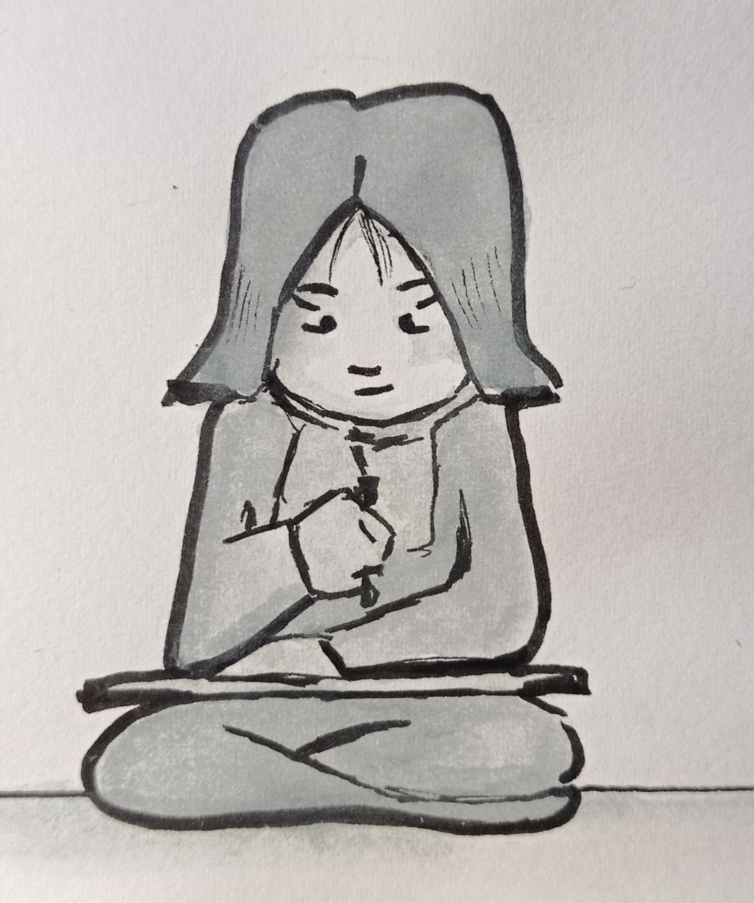
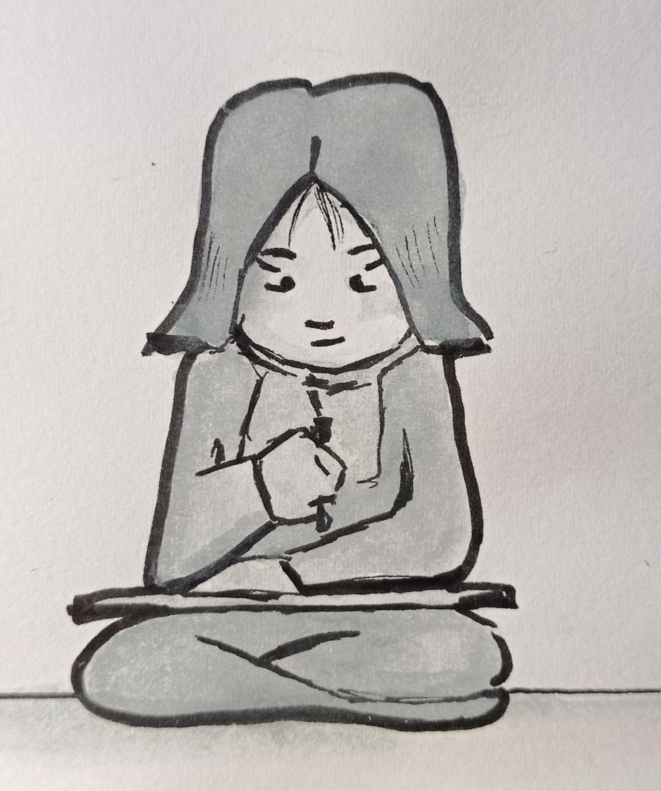
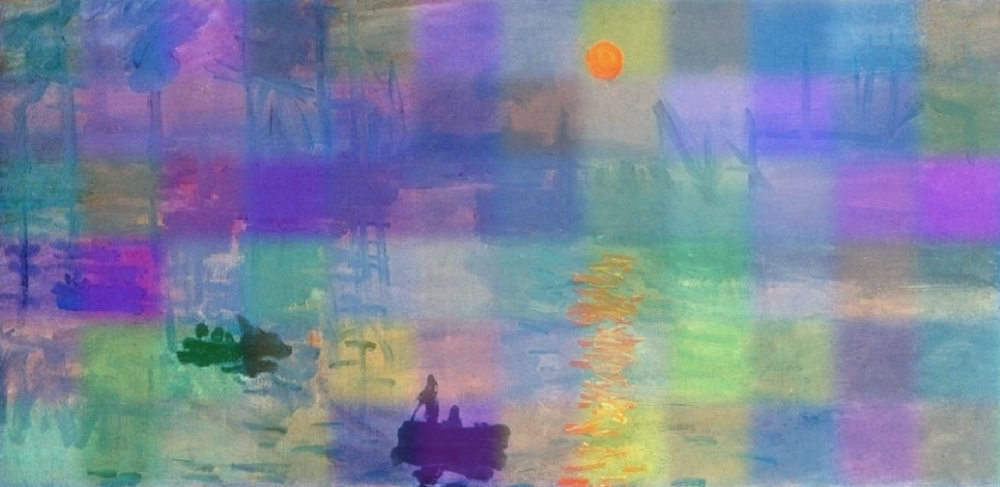

My interactive artworks
Portfolio

A website created with Adobe illustrator. It's a portfolio with my works including artworks from my researcher's diary made in the first semester of this year and the early concept art of my interactive website Magician cat.
my portfolioMagician cat
The interactive website for p5 task. A magician cat is playing hide and seek with his Teddy Bear. A Teddy Bear appears and disappears in the cloud. You have to click on Teddy Bear to help Magician Cat catch him, after you click on him three times special animation will appear.
magician catMonets sunrise
A 20th century painting, Sunrise painted by Claude Monet is one of the most popular impressionism paintings. In this webpage you can add colorful sunshines to complement the artwork as the sun rising brings colors to our world
SunriseWitch
A gif series inspired by illustrator Marianna Raskin. The characteristic of her style is a calm grayish color scheme that reminds me of my own choice of colors. Halloween and autumn vibes inspired me to make the main character of the gif series a witch. It was interesting to make an animation with multiple secondary actions. The main character is a young half green dyed hair witch that uses her magic to accomplish her multiple everyday tasks. The animation was made in an animation desk app.
Witch, the gif seriesGlitched reality

It's a website made in 3D, using A-Frame code. The concept of the idea comes from my dream. Pictures of memories featuring a character glitching may represent the disability living in the current moment is one of dreams translations, but everyone can have its own meaning about. Glitchy blue character contour contrasts with the orange background color representing the standing out from the surrounding. The pictures arranged in a circle inspired from the Big Amber building’s shape also featured from the dream.
glitched reality